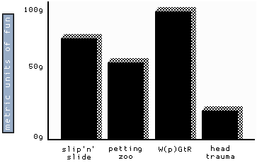

Makes generating hierarchical documentation fast and enjoyable, from the comfort of your favourite code editor and your mechanical keyboard. No more time wasted clicking through endless menus and prompts, fumbling around with bloated word processors, in attempts to structure, format, resize, or drop some thing in place, then drag it around.
Date:
Author: Joseph Patton-Robson
Documentr uses the Middleman static site generator written in Ruby, to generate hierarchical html documents. This makes Documentr highly extendable with support for multiple pages, layout templates, integrations, and much more! Anybody who is familiar with Ruby on Rails will find Documentr very familiar to use.
Documentr is intended to be a simplistic framework, used to generate HTML documents that are compatible with a wide array of applications and uses. It is recommended that the use of CSS is kept to a minimum and Javascript is avoided, however feel free to break these guidelines if your use case calls for such.
The examples are written with Haml, but if you prefer Markdown, Documentr feels very similar to writing GitHub documentation files, and is compatible with GitHub Markdown files.
This section assumes you have Ruby installed and are familiar with elementary web development concepts and a terminal.
$ git clone https://github.com/webdev-kiwi/documentr
$ bundle install
The build directory contains the output files, or built Documentr files.
The data directory contains the default data, such as title and author page variables for use within the source files.
The source directory is your working directory, containing your source files the generator will use to build your output files from.
This file contains the config and settings for use by the generator.
If this file needs explanation, don't touch it!
Start the Middleman development server, with default options by typing:
$ bundle exec middleman server
Now, to preview your document simply open a web browser and type localhost:4567/demo.html into your address bar. You may overide the default port to 4568 for example, with:
$ bundle exec middleman server --port=4568
Like Ruby on Rails, Middleman makes use of Tilt a generic interface to multiple Ruby template engines. This allows Documentr source code to be written in an array of markdown and markup languages, whichever you're more comfortable using.
Beautiful, DRY, well-indented, clear markup: templating haiku. Haml Tutorial.
Prefer to write your documentation in Markdown?
Template engine options are set in config.rb the default settings for use with Haml are shown below:
set :haml, { :ugly => false, :format => :html5 }
And for Markdown, with the Kramdown engine:
set :markdown, :fenced_code_blocks => true, :smartypants => true
For more information on template engine options, see: https://middlemanapp.com/basics/template_engine_options/
Frontmatter allows page specific variables to be included at the top of a template using the YAML format.
Documentr default values are set in data/defaults.yaml
| key | value |
|---|---|
| title: | Documentr - hierarchical document generator |
| description: | Makes generating hierarchical documentation fast and enjoyable, from the comfort of your favourite code editor and your mechanical keyboard. No more time wasted clicking through endless menus and prompts, fumbling around with bloated word processors, in attempts to structure, format, resize, or drop some thing in place, then drag it around. |
| version: | 0.3 |
| date: | 2016-06-25 |
| author: | Joseph Patton-Robson |
| copyright: | 2016 Webdev.kiwi Limited |
You may override these at the top of any source file, like so:
---
title: "Example"
copyright: "2016 Company"
---
Alternatively JSON may be used, example:
;;;
"layout": "custom",
"my_list": [
"one",
"two",
"three"
]
;;;
Middleman Helper Methods should feel very familiar to anyone who has used rails view helpers. These helpers are from the Padrino Framework, view the full documentation for Padrino Application Helpers.
= link_to "link text", "link url"
= link_to("link text", "link url", target: "_blank")
= link_to("link text", "link url", target: "_blank") + ","
= image_tag "graph-1.gif"

image credit: Why's (Poignant) Guide to Ruby
Documentr will automatically add image sizes to these tags based on the image dimensions.
At the time of build, Documentr will automatically compress images using the middleman-imageoptim gem.
use at the top of your index.haml
---
sections:
- "Section 1"
- headings:
- "heading 1"
- subs:
- "sub heading 1"
- "sub heading 2"
- "heading 2"
- "Section 2"
---
Section index is generated from a nested structure.
section has many headings
heading belongs to section
heading has many subs
Sub belongs to heading
Middleman-Livereload is an extension for the Middleman static site generator that adds livereloading functionality. Live Reload is a system to automatically reload a web page when the source files for that web page are changed. This is particularly useful for previewing your documents without the need to refresh your browser.
Coupled with the Chrome RemoteLiveReload extension, every time you hit save in your text-editor your browser will automatically refresh the page allowing for seamless previews of your document. Images and other assets will also be automatically reloaded as they're added, or replaced.
Some users may experience issues using Middleman-Livereload in certain situations. An alternative to Middleman-Livereload is node-livereload, an implementation of the LiveReload server in Node.js.
©